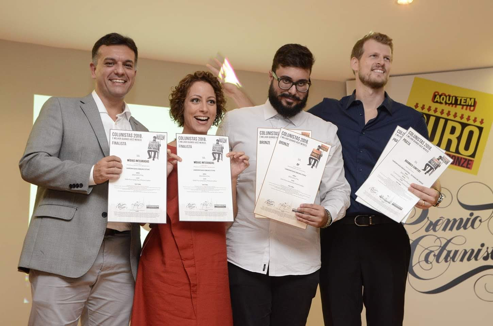

O problema que a STIHL precisava resolver
Em jardinagem doméstica e usuários ocasionais, a STIHL — líder em ferramentas motorizadas portáteis com ~90 produtos e 3,4 mil pontos de venda — enfrentava um desafio específico: os consumidores simplesmente não sabiam usar as ferramentas. Havia desconhecimento dos produtos, percepção equivocada sobre autonomia de equipamentos a bateria e forte concorrência de importados genéricos.
A oportunidade que identificamos junto à STIHL era clara: em vez de mais anúncios de produto, a marca deveria se tornar a fonte de conhecimento do segmento. Mostrar "na vida real" como as ferramentas resolvem problemas concretos de quem quer criar e manter um jardim em casa.
A novelinha verde: 50 dias de transformação real
O formato que desenhamos junto ao cliente misturava a narrativa de novela com a dinâmica de reality show: acompanhar em tempo real a transformação completa de um quintal de ~100m² em Holambra (SP), a "Cidade das Flores". Apresentado por Carol Costa — a maior influenciadora do segmento no portal Minhas Plantas —, o projeto criou uma narrativa cotidiana que engajava por continuidade, suspense e identificação.
- 42 episódios gravados, publicados de segunda a sábado no horário do almoço
- 8 lives aos domingos, recapitulando a semana e respondendo dúvidas em tempo real
- Episódios de ~10 minutos com forte componente DIY (faça você mesmo)
- Temas: poda, horta orgânica, flores comestíveis, suculentas, lago ornamental, permacultura, pergolado, jardim vertical
- Participação de especialistas, incluindo o botânico Harri Lorenzi
Distribuição transmídia com storytelling contínuo
YouTube
Hub principal. Episódios no canal Jardim das Ideias STIHL (manhã) e replicados no canal Minhas Plantas (tarde). Mídia pre-roll para amplificar alcance.
Central para as lives semanais de domingo. Mídia paga em views de vídeo e resumos de episódios — maior volume de impactos do investimento.
Perfil dedicado "Jardim das Ideias STIHL". Stories de bastidores, dark posts patrocinados. Melhor custo por clique da campanha.
TV por Assinatura
Canal Home & Health. Vinhetas da websérie para criar awareness em mídia tradicional e converter audiência offline para o digital.
Portais Jardim das Ideias e Minhas Plantas
Resumos semanais, tutoriais e conteúdo expandido. Reforço de narrativa e geração de tráfego orgânico para o YouTube.
Inbound Marketing
E-books, dossiês de espécies e vídeo-tutoriais complementares. Iscas digitais para geração de leads qualificados com cupons de desconto.
Investimento por canal e impactos gerados
O dado ilustra uma estratégia consciente: YouTube como plataforma principal de profundidade (watch time e intenção), Facebook como amplificador de alcance, Instagram como conversor de custo, TV como elevador de percepção.
Prêmios e resultados qualitativos

O que esse case demonstrou
O "50 Dias de Verde" comprovou uma premissa que defendo junto aos clientes: branded content funciona quando serve genuinamente ao público, não à marca. A STIHL não apareceu como vendedora de ferramentas — apareceu como habilitadora de sonhos de jardinagem. As ferramentas surgiam organicamente no contexto das tarefas, sem interrupção da narrativa.
Planejamos a estrutura transmídia para que cada canal cumprisse um papel específico na jornada — e não para replicar o mesmo conteúdo em todos os lugares. Essa coerência entre plataformas explica o equilíbrio entre alcance massivo (+46M impactos) e profundidade de relacionamento (+6M visualizações com alto watch time).